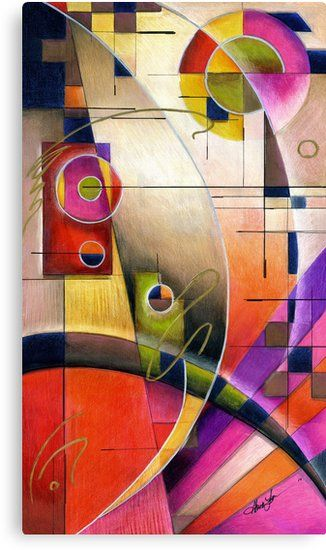
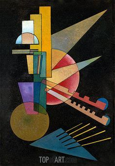
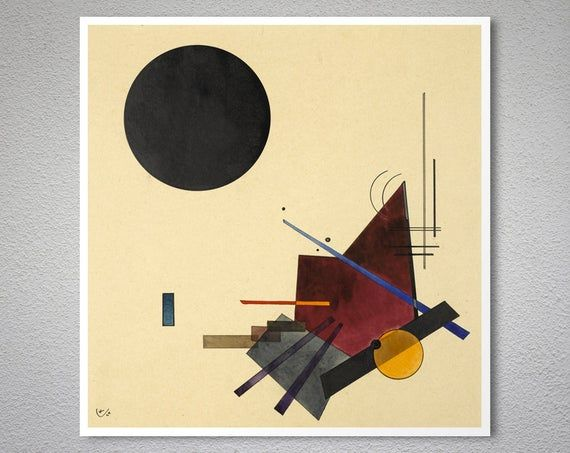
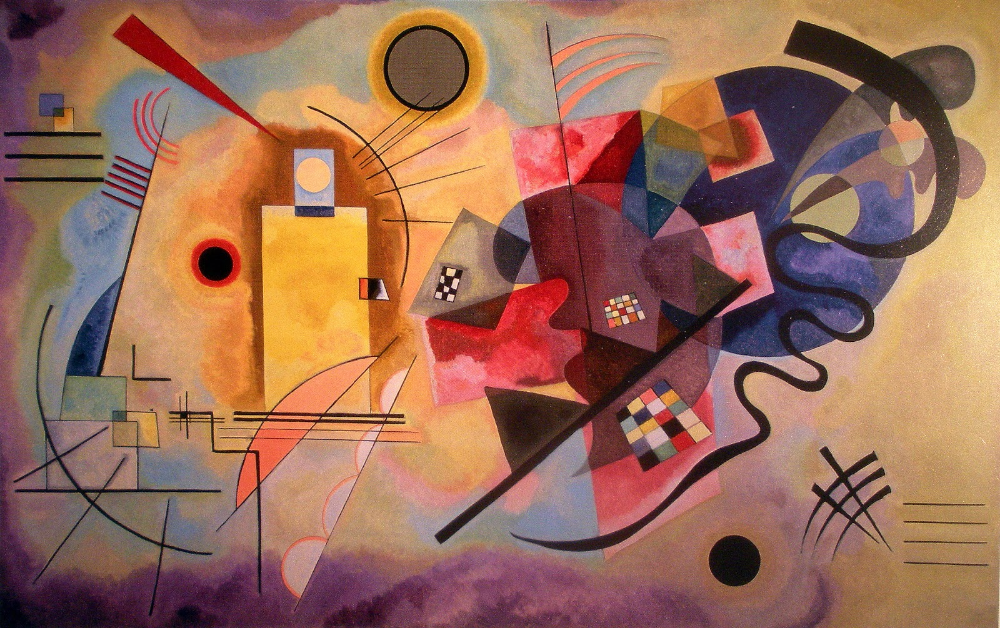
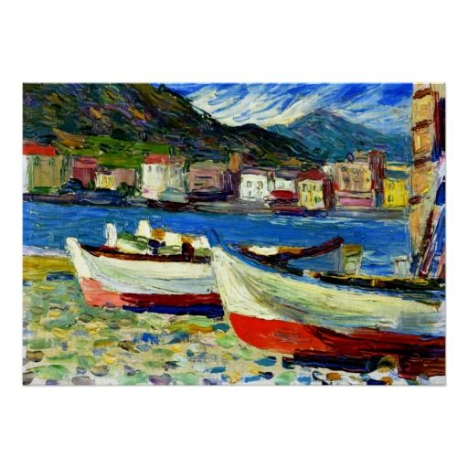
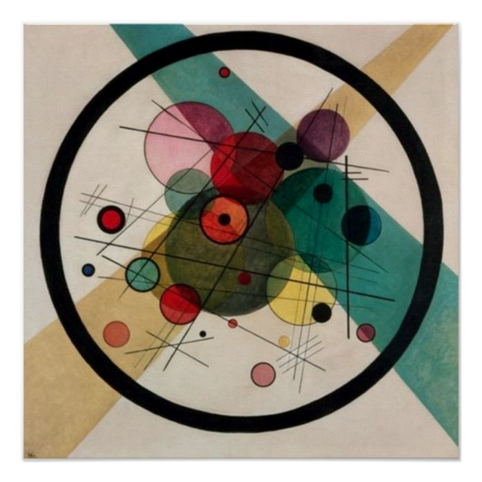
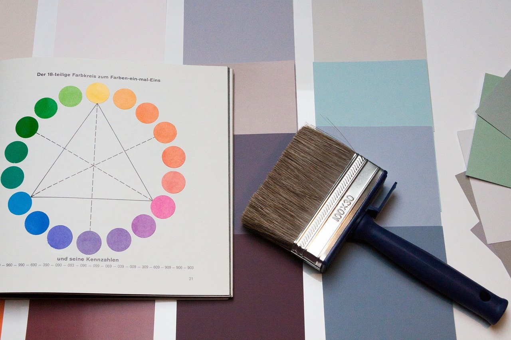

Vasilij Kandinskij






×

Die Farbe Rot steht in der Farblehre für Energie, Liebe, Feuer,
Lebenskraft, Aktivität, Dominanz und Sinnlichkeit. Rot belebt
und regt an.
Die genaue Wirkung dieser Farbe hängt jedoch von ihrem
Ton ab. Gelblichtoniges Rot erzeugt als Wandfarbe eine warme,
wohnliche Stimmung. Bläuliches Rot dagegen schafft vor allem in
Kombination mit Weiß einen eleganten, modernen Eindruck in der
Raumgestaltung. Weiße Wände, Möbel und Accessoires wirken neben
blaustichigem Rot besonders frisch.
Es „schluckt“
Gelbschattierungen und bringt dadurch das Weiß zur Geltung. Frauen
kennen diesen Effekt von Lippenstiftfarben, die Zähne zum Strahlen
bringen. Rot ist immer ein Statement – nichts für schüchterne
Gemüter. Es eignet sich gut, um starke Akzente zu setzen. Aber am
besten auf kleineren Flächen.
Gelb ist die Sonne, licht- und wärmespendend und damit auch
überlebenswichtig. Lacht die Sonne am Himmel, wird das in der
Regel mit Heiterkeit und Unbeschwertheit
verbunden.Lebensspendet.
Schützend. Goldig und belebend. Magisch, wegweisend und
insperierend. Üpprig und freigiebig. Wärnend und ächtend.
Krank und verdorben.
Die Farbenlehre beschreibt Gelb als anregend, schwerelos, heiter,
stimulierend und licht. Gelb ist im Farbkreis die hellste und
kommunikativste Farbe. Sie wirkt strahlend und weitend. Es eignet
sich hervorragend für Zimmer mit wenig Tageslicht. Als Deckenfarbe
wird helles Gelb sogar strahlender empfunden als Weiß. Gelb
scheint dem Betrachter entgegen.
Gelb regt die geistige und kreative Aktivität an und
ist daher eine gute Wahl für Arbeitszimmer. Wer sich länger im
Raum aufhält, sollte eher zu pastelligen Tönen greifen als zu
kräftigen. Ein zu stark anregender Effekt kann auf Dauer
anstrengend wirken.
Grün steht für Natur und Leben, für Wachstum und Frische.
Gelbliche Grüntöne wirken anregend, frisch und vitalisierend und
gehen eine perfekte Verbindung mit hellen Nuancen wie Sand,
Beige, Creme, Vanille und Hellgrau ein.
Kombiniert man sie mit Blaunuancen, wird die Wirkung
der natürlichen Frische noch verstärkt. Im Zusammenspiel mit
Brauntönen wirken gelbliche Grüntöne hingegen ruhig und warm.
Bläuliche Grüntöne vermitteln eine ruhige Raumatmosphäre, die zum
Entspannen einlädt. Die Kombination mit Brauntönen verstärkt diese
Wirkung. Spannende Akzente entstehen durch das Nebeneinander von
Grün und dunklem Rot. Hier bieten sich Burgund- und
Bordeauxnuancen an sowie Violett oder Beerentöne.
Wer es kontrastreich und farbenfroh liebt, kann leuchtende
Grüntöne auch mit kräftigen Farben wie Orange oder komplementären
Rot-Nuancen kombinieren. Hier ist allerdings Augenmaß gefragt, da
die Farben im Zusammenspiel schnell unruhig wirken.
Blau werden in der Farbenlehre Attribute wie Ferne, Tiefe,
Kühle, Wasser, Himmel, Ruhe und Transzendenz zugeschrieben.
Ein kühles Blau sorgt für Ruhe und eignet sich daher perfekt
als Wandfarbe für das Schafzimmer. Die Kombination von Möbeln aus
Naturholz mit der blauen Wand verleiht dem Raum Wärme und
Gemütlichkeit. Blau mit einem gelben Stich bis hin zu Türkis wirkt
dagegen anregend.
Da Blau neben seiner ruhigen Ausstrahlung auch die Eigenschaft
hat, die Konzentration zu fördern, sind gelbliche Blautöne, wie
Türkis passende Farben für das Arbeitszimmer. Blau zieht sich
zurück, die Farbe ist unaufdringlich und verleiht einem Raum Weite
– unter anderem durch die Assoziationen mit dem Himmelsgewölbe
oder dem scheinbar endlosen Meer.
Violett oder auch Lila ist laut Farblehre geheimnisvoll,
mystisch, luxuriös, extrovertiert, romantisch und
unkonventionell. Violett ist eine charismatische Farbe. Eleganz
bekommt die Farbgestaltung in Kombination mit Mauve, Grau oder
Beige. Zusammen mit Gold wirkt Lila luxuriös. .
Helles Holz zu Violett bildet einen attraktiven, modernen
Kontrast. Eine edle Wirkung erzeugen Sie in Verbindung mit
mitteltonigen bis dunklen Brauntönen wie Mokka, Tabak oder
Schokolade. Kraftvoll und trendig kommt Violett im Zusammenspiel
mit gelblichen Grüntönen daher, farbintensiv wirkt es mit
Orange..
Welche Farben gut zusammenpassen, lässt sich am harmonischen Farbkreis ablesen. Der Farbkreis stellt die unterschiedlichen natürlichen Farbabstufungen dar. Gelb, Blau und Rot bilden die drei Primärfarben. Durch ihre Mischung entstehen die Sekundärfarben Grün, Orange und Violett. Aus den sechs Primär- und Sekundärfarben ergeben sich wiederum die sechs chromatischen Abstufungen Gelb-Orange, Rot-Orange, Rot-Violett, Blau-Violett, Blau-Grün und Gelb-Grün.
Weiß - Farbe der unendlichen Möglichkeiten. Was ist weiß? Welche Bedeutung hat diese unbunte Farbe für die abstrakte Kunst? Und wie viele Weißpigmente gibt es überhaupt? Diesen Fragen geht die Ausstellung „Kandinsky, Malewitsch, Mondrian – Der weiße Abgrund Unendlichkeit“ im K20 der Kunstsammlung Nordrhein-Westfalen nach.
Für die drei Künstler war Weiß ein Symbol für die zukünftige Welt – auf ganz unterschiedliche Weise. Der weiße Abgrund Unendlichkeit. Vor rund 100 Jahren prägten Einsteins Relativitätstheorie und die Quantenphysik ein neues Bild von der Welt. Auch Wassili Kandinsky (1866-1944), Kasimir Malewitsch (1878-1935) und Piet Mondrian (1872-1944) waren beflügelt von diesen Theorien. Sie eröffneten ihnen völlig neue Zukunftsutopien, die sich um eine unsichtbare Realität jenseits aller traditionellen Vorstellungen von Raum und Zeit drehten. Diese vierte Dimension versuchten die Künstler innerhalb des Bildraums sichtbar zu machen.
Die Farbe Weiß wurde dabei zu ihrem zentralen Konzept. Aber Kandinsky, Malewitsch und Mondrian haben sich ganz unterschiedlich mit der Farbe Weiß, mit Zwischenräumen und Aussparungen auseinander gesetzt. Jenseits der Realität Diesen verschiedenen Aspekten und Ansätzen hat die Kunstsammlung NRW eine ambitionierte und substantielle Ausstellung gewidmet. Auch die ganz in Weiß gehaltene Ausstellungsarchitektur ordnet sich dem Konzept unter. Sie basiert auf Zeichnungen Piet Mondrians und soll das Thema des Schwebens augenfällig machen. Jedem Gemälde wird eine eigene Wand zugestanden, damit der Betrachter sich auf das einzelne Werk konzentrieren kann.
Den Anfang macht natürlich Kandinskys Komposition IV (1911) aus der eigenen Sammlung. Bereits 1911 hatte Kandinsky die traditionell abbildende Landschaft schon längst hinter sich gelassen. Ihm ging es um räumliche Ebenen und symbolische Landschaften, die sich in weißem Nebel auflösen. Aber es sind keine Wolken, die das Weiß in Komposition IV versinnbildlicht. Vielmehr symbolisieren die weißen Formen eine höhere geistige Welt, eine vierte Dimension, in der sich die Landschaft schließlich verliert. Nichtfarbe Weiß Dreieinhalb Jahre haben die Ausstellungsvorbereitungen gedauert.
Weiß sei in der Forschung als Nichtfarbe vernachlässigt worden, so die Kuratorinnen Marion Ackermann und Isabelle Malz. Deshalb sind die Fragestellungen rund um diese Farbe teilweise ganz pragmatisch: Es geht um Bindemittel, Pinselduktus und Pigmente. Mondrian hat das Weiß mit bläulichen, rosafarbenen und grauen Schattierungen durchsetzt und Malewitsch die Farbe mit den Fingern aufgetragen.
Es bleibt jedoch der theoretische Ansatz, der im Vordergrund steht. Vier Laboratorien, die in die Ausstellung eingebunden sind, fächern ihn auseinander und beleuchten über alle Gattungen hinweg die Themen Okkultismus und Naturwissenschaften, Farbe, Film sowie Architektur. Weiße Fläche, weißer Raum Während weiße Flächen für Kandinsky eine höhere geistige Welt jenseits der drei definierten Dimensionen ausdrückten,sah Malewitsch im Weiß eine Vollendung der Gegenstandslosigkeit.
Zugleich ging er der Frage nach, wie sich Formen im Raum verändern: Schwebt das schwarze Quadrat in seinem Bild Schwarzes Quadrat (in Düsseldorf ist eine spätere Fassung von 1929 zu sehen) noch statisch vor dem weißen Hintergrund, gewinnen seine Quadrate später als flächig verzogene Trapezoide an Dynamik, bis sie sich schließlich als weiße Flächen vor weißem Raum auflösen. Zwei Highlights in der Ausstellung sind sicherlich Malewitschs Suprematismus-Gemälde (Gelbe Ebene in Auflösung und Weiße Ebenen in Auflösung) (mehr) aus dem Amsterdamer Stedelijk Museum, die diese Entwicklung nachvollziehbar machen.
Auch Piet Mondrian vermutete eine universale Wahrheit jenseits des Gegenständlichen. Er reduzierte seine Palette schließlich auf die drei Primärfarben Gelb, Blau und Rot und beschränkte sich auf horizontale und vertikale Linien, womit er Form und Materie Ausdruck verlieh. Weiß setzte er sinnbildlich mit dem leeren Raum gleich. Rund 120 Gemälde, Zeichnungen, Architekturmodelle und Künstlerbücher haben die Kuratorinnen zusammengetragen. Die Exponate stammen aus der Tretjakow Galerie in Moskau, dem Pariser Centre Pompidou sowie dem Museum of Modern Art in New York und damit aus den renommiertesten Sammlungen Europas und den USA. Diese Leihgaben erhält das Museum auch deshalb, weil seine Direktorin im Gegenzug bereit ist, hochkarätige Werke aus der eigenen Sammlung des K 20 auszuleihen.
Trotzdem fürchtet Marion Ackermann, dass eine solche Schau in zehn Jahren kaum mehr zu realisieren sei. Zu zahlreich seien dann die Museen in Asien, die dort wie Pilze aus dem Boden schießen, und die - finanziell bestens aufgestellt – dieselben Leihgaben begehrten wie die Europäer. Weiß ist alle Theorie Auch für den Besucher, der sich nicht mit dem theoretischen Hintergrund befassen, sondern lieber flanieren möchte, ist die Schau ein echter Blickfang.
Es braucht Zeit, um sich in die einzelnen Farbflächen zu vertiefen. Es sind Minuten der Kontemplation, der Ruhe und Innerlichkeit. Zeit, um über sich selbst und das Sein des Menschen zu reflektieren: Über die Unendlichkeit, über das Morgen hinaus. Das ist das Potential der gegenstandslosen Malerei. Wenn man es denn zulässt. Olafur Eliasson – Dein Ausstellungsguide Bevor Sie jetzt weiterlesen: Zücken Sie erst Ihr Smartphone, geben Sie im App-Store den Namen Olafur Eliasson ein und laden Sie sie kostenlos herunter: Die App „Dein Ausstellungsguide“.
Fertig? Dann weiter im Text … Auch Olafur Eliasson geht es um den kontemplativen Umgang mit der Kunst. In der webbasierten modernen Welt sensibilisiert er uns dafür, nicht schnell und achtlos an einem Kunstwerk vorbeizugehen, sondern die Umwelt neu wahrzunehmen. Dafür liefert Olafur Eliasson Denkanstöße. Man kann sie entweder auf dem eigenen Handy nachlesen oder sie in der abgedunkelten, weitläufigen Grabbe-Halle des K 20 selbst erfahren. Dort hat der Künstler einen prismatischen Ring installiert, der auf den Wänden Lichtkreise und –bögen projiziert - mal in allen Spektralfarben, mal in Weiß.
Ganz rechts, am Ende der Ausstellungshalle, befinden sich elf iPads, auf denen die App ebenfalls installiert ist. Dort wie auf dem eigenen iPhone kann man zwischen elf Gedankenanstößen wählen, zwischen „Ungewissheit“ etwa oder „Asteroid“. Wie wäre es, wie ein Asteroid durch das Museum zu schweben? Wie fühlt es sich an, mit Sehgewohnheiten zu brechen? Was wäre, wenn die Kunst keine Kunst wäre? In enger Anlehnung an die Ausstellung „Der weiße Abgrund Unendlichkeit“ und in Kooperation mit der Kunstsammlung Nordrhein-Westfalen hat der in Kopenhagen geborene und in Berlin lebende Künstler dieses Projekt entwickelt. Auch hier gilt: Man muss sich nur darauf einlassen.
Nichts ist nur schwarz oder weiß. Die ganze Welt ist voller Farben!